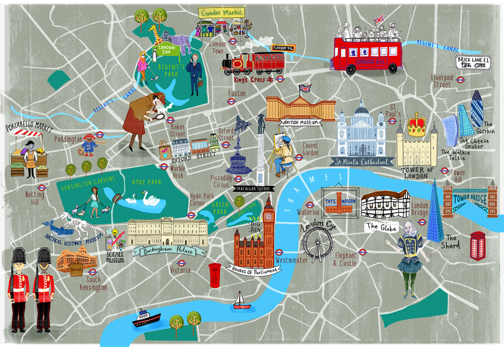
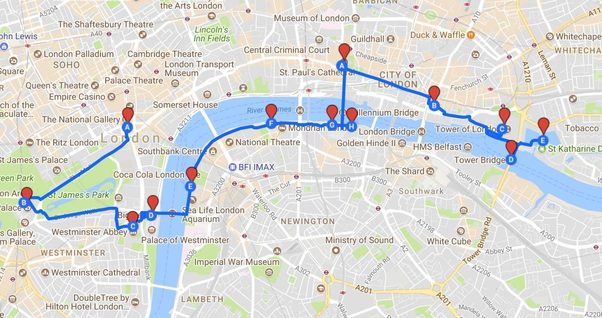
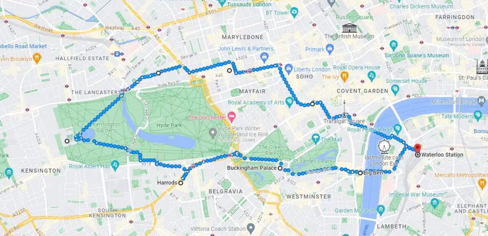
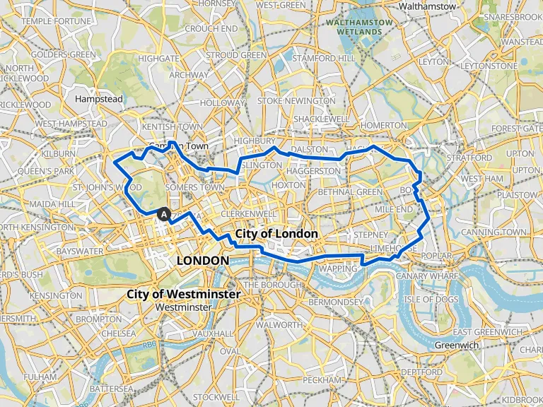

Explore Tourist Routes and Things to do in the city
Top 10 things to do after reaching the City of London
- Tour the British Museum: Head to Great Russell Street and step into the British Museum, where you can explore exhibits like the Rosetta Stone, the Parthenon Sculptures, and ancient Egyptian mummies. Allocate 2-3 hours for a thorough visit.
- Visit the Tower of London: Located by the River Thames, this historic fortress is famous for housing the Crown Jewels. Book a guided tour with a Yeoman Warder to hear fascinating tales of its history, including executions and royal intrigues.
- Ride the London Eye: Book your tickets online to skip the queue and enjoy a 30-minute ride on this iconic observation wheel on the South Bank. Time your visit at sunset for stunning views of the city.
- Stroll Through Hyde Park: Enter via the Marble Arch entrance and wander through this sprawling green space. Stop by the Serpentine Lake to rent a paddle boat or visit the nearby Kensington Palace.
- Visit Westminster Abbey and Big Ben: Start at Parliament Square to admire Big Ben and the Houses of Parliament, then explore Westminster Abbey. Check the Abbey's website for guided tours or special services you can attend.
- Shop at Covent Garden: Walk to Covent Garden Piazza, where you'll find high-end shops, quirky boutiques, and lively street performances. Don’t miss the Apple Market for handmade crafts and gifts.
- Catch a West End Show: Book tickets for a top-tier production in theaters like the Lyceum Theatre (for The Lion King) or Her Majesty's Theatre (for Phantom of the Opera). Evening shows usually start at 7:30 PM.
- Explore Camden Market: Head to Camden High Street to discover unique stalls selling alternative fashion, vintage items, and global street food. Be sure to try local favorites like Camden Lock's vegan burgers or Thai street noodles.
- Cruise the River Thames: Book a Thames River Cruise departing from Westminster Pier. Opt for a route that includes Tower Bridge, St. Paul’s Cathedral, and Greenwich for a complete sightseeing experience.
- Visit Buckingham Palace: Arrive early at Buckingham Palace to secure a spot for the Changing of the Guard ceremony, which usually starts at 11:00 AM. From July to September, book tickets to tour the palace's State Rooms.
Top places to visit
Tower of LondonTower BridgeBuckingham PalaceWestminster Abbey
London EyeBig BenSt. Paul's CathedralWarner Bros. StudioNational Gallery
British MuseumBorough MarketThames RiverSky GardenSea Life CentreKew Gardens
Main tourist Routes and packages



